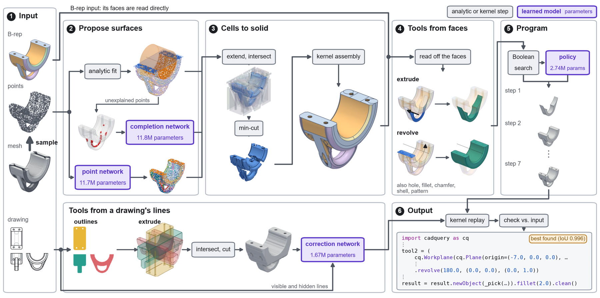
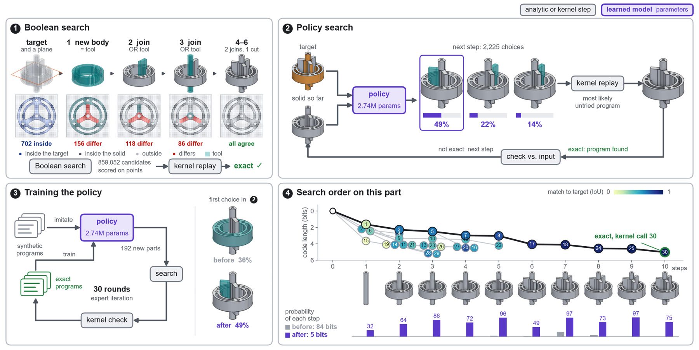
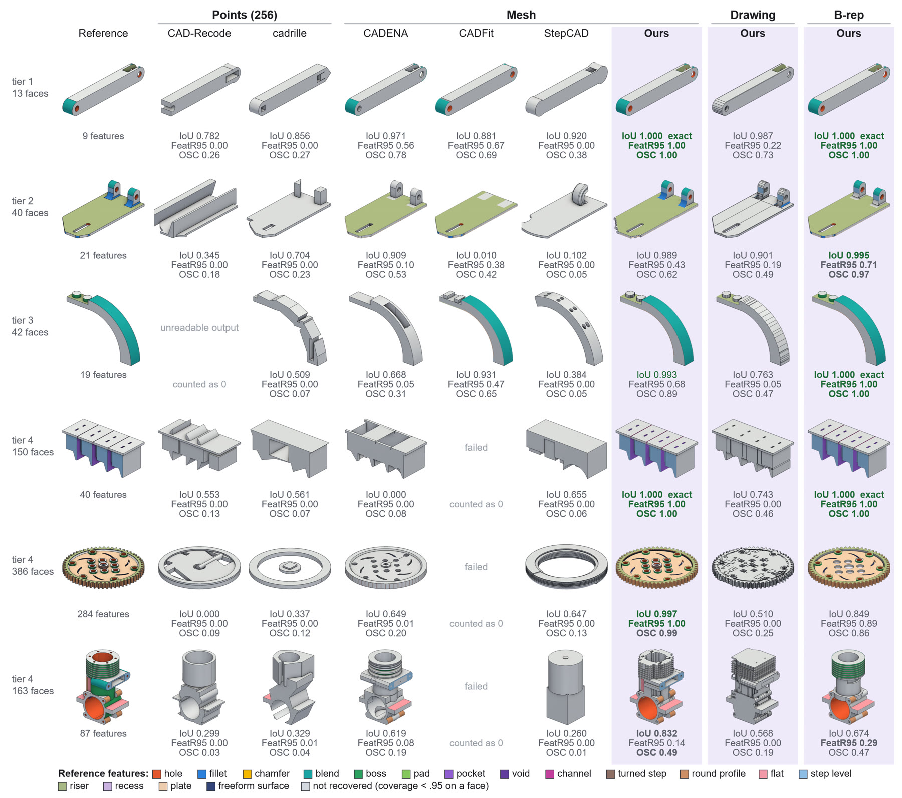

The idea
A B-rep already holds most of the numbers a program needs: a face outline can be an extrusion profile and a cylindrical face a hole. So we read candidate tools off the faces and search only for which to combine, and in what order. Meshes and point clouds are first rebuilt into a B-rep, and drawings are carved from their three views.
1The idea
A STEP file keeps a part's exact boundary but not the operations that built it, and a mesh or scan keeps even less. Recent methods train large code generators to predict both the operations and their numbers. A boundary representation, or B-rep, already holds most of those numbers: the outline of a planar face can serve as an extrusion profile, another face fixes its depth, and a cylindrical face gives a hole. The construction sequence is missing, but the geometry of its tools is already there.
So Abra-CAD reads candidate tools straight off the faces (extrusions, holes, revolves, fillets, chamfers, shells and patterns) and searches only for the discrete choices: which tools to use, which Boolean to apply, and in what order. A program counts as exact when its solid matches the target to within 10−5 in volume IoU. It does not have to match the original history, since many programs build the same solid.


2Two searches over the same tools
Boolean search. Building every combination of tools in the CAD kernel would be far too slow. Instead, each tool is tested once on probe points: 1,024 random points in the part's bounding box, plus pairs just inside and just outside each face. Joining two tools is then an OR of their masks and a cut is an AND with a NOT, so a beam search can score hundreds of thousands of candidates without building a solid. Only the best are replayed in the kernel. On the training part in the figure below, 859,052 candidates were scored on points and a single six-operation program was replayed, exactly.
A learned policy. When that search misses, a 2.74M-parameter graph transformer looks at the target and the solid built so far and proposes the next action. It first imitates synthetic Zero-to-CAD programs, then improves by expert iteration: for 30 rounds it searches new parts and learns from the exact programs it finds. Candidate programs are tried in order of their code length under the policy, the number of bits it needs to describe them. On the part below, training cut that cost from 84 bits to 5.


3Meshes, point clouds and drawings
A mesh or point cloud has no faces to read, so it is first rebuilt into a B-rep. Planes, cylinders, cones, spheres and tori are fitted wherever the samples support them, and two small networks (11.7M and 11.8M parameters) propose the surfaces that fitting misses. Every surface is extended across a box around the part, a graph min-cut labels the resulting cells as material or empty, and the material cells are fused into a solid that enters the same search. When the search cannot match the input, a fallback slices the mesh into stacked cross-sections and extrudes them, which still gives a program that runs.
A drawing follows its own route. Each view's outline is extruded along its viewing direction and the extrusions are intersected; closed regions in a view become cuts, with depths read from the other views; and a 1.67M-parameter network corrects the carve from the drawn lines.
4Results on 748 ABC parts
From meshes, the search alone reaches 0.648 mean volume IoU, just under CADENA's 0.672. The section-stack fallback, which covers the parts the search cannot match, raises it to 0.864. Stacked sections run, but they are harder to edit than a feature program, so the count of exact rebuilds is the stricter measure and the one I lead with. From drawings, the programs reach 0.744 against 0.334 for Ortho2CAD-RL. From point clouds the baselines are close: cadrille-RL reaches 0.641 to our 0.609, though ours covers more of the surface.
How the comparison was run
- Parts. Every method rebuilds the same 748 single-solid ABC parts, each from its own kind of input.
- Baselines. We ran each baseline ourselves on these parts. The scores are from our runs, so they can differ from the numbers in the original papers, which were measured on other test sets.
- Scoring. Every output program is replayed in the CAD kernel and compared with the reference solid. IND is volume IoU after normalizing both solids, averaged over all 748 parts, and a program that fails to run or build scores zero.
- Inputs. The point-cloud baselines take 256 points, as they were built to; ours takes 8,192 oriented points. Parameter counts marked * are for the backbone only.
| Input | Method | Params | IND | OSC | FeatR95 | Exact |
|---|---|---|---|---|---|---|
| points | CAD-Recode v1.5 | 1.54B | .482 | .188 | .050 | 3 |
| points | cadrille-RL | 2.21B | .641 | .208 | .064 | 1 |
| points | Abra-CAD | 17.2M | .609 | .320 | .058 | 0 |
| mesh | CADENA | 2.21B | .672 | .392 | .173 | 4 |
| mesh | StepCAD | 1.55B* | .546 | .213 | .085 | 4 |
| mesh | CADFit | 0.3B* | .444 | .445 | .326 | 0 |
| mesh | Abra-CAD | 17.2M | .864 | .793 | .731 | 102 |
| drawing | Ortho2CAD-RL | 8.77B | .334 | .069 | .005 | 0 |
| drawing | Abra-CAD | 1.67M | .744 | .449 | .132 | 0 |
| B-rep | Abra-CAD | 2.7M | .736 | .789 | .751 | 403 |
Exact programs from B-reps
Given the B-rep, Abra-CAD also rebuilds 1,492 of the 1,725 Fusion 360 Gallery test designs exactly within 100 kernel evaluations (86.5%), against 67.5% reported for the published Gallery agent in its own environment. Boolean search, with no learned parameters, accounts for 1,431 of them; the trained policy adds 61. On CADBench's four 3,000-design splits it finds 2,930 exact programs on DeepCAD, 1,968 on Fusion 360, 2,499 on ABC Extrude and 1,391 on ABC All-Ops. The drop on All-Ops shows where the supported tools run out.
5Volume overlap is not enough
A program can overlap its reference almost perfectly and still get the details wrong. On one part, removing a 0.2 mm chamfer leaves volume IoU at 0.99994. So we also measure surfaces. Oriented surface coverage samples each patch of the reference and checks that the output has surface nearby, facing the same way, and small patches count as much as large ones; the same missing chamfer drops it to 0.704. A feature such as a hole or fillet counts as kept only when all of its faces are covered. In the table, cadrille-RL reaches 0.641 IND but only 0.208 coverage and 0.064 feature retention.


6Limits
Exact recovery depends on the tools that can be read off the faces. Extrusions, revolves and finishing operations cover many mechanical parts, but freeform geometry remains hard. A program that rebuilds the shape need not match the designer's original history or constraints, and a section-stack fallback runs but is harder to edit than a compact feature program.
7Paper
A. Bharathi, R. Muthuganapathy. Abra-CAD: Geometry-Guided Reconstruction of CAD Solids and Construction Programs. Under review.